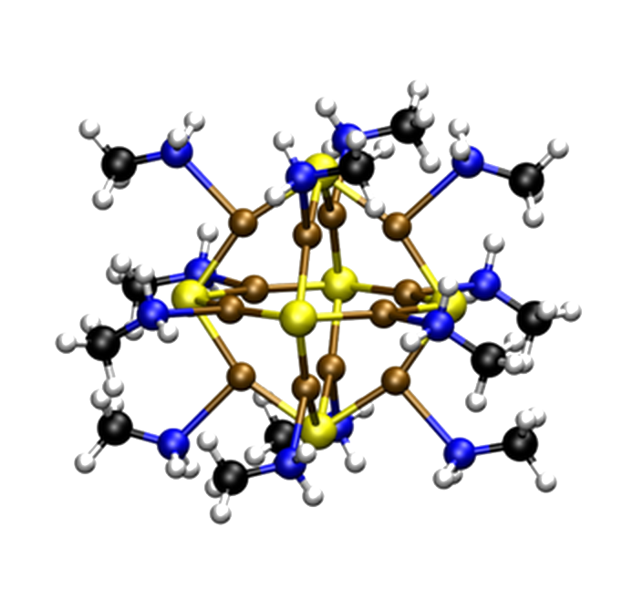

Computational Materials Science
At the University of Seville
We design and optimize new materials with computer simulations. Right now we study how heat crosses the boundaries between crystal grains.
What we are doing now
Our current work is on materials with grain boundaries, the interfaces where two crystals of the same material meet. We want to know how these boundaries change the way heat moves through a material.
-
Build the structures
We generate new atomic models of grain boundaries to simulate.
-
Fit the potentials
We develop the interatomic potentials that make these large structures possible to simulate.
-
Run the pipeline
One workflow links established simulation programs, so each new study is easier to set up.
-
Compute thermal conductivity
The property we are specialised in right now.

- S
- Cu
- N
- C
- H
About Us
- Mission
- New Materials Lab is an initiative focused on the understanding, design and optimization of new materials using computer simulations.
- Approach
- The discovery and implementation of new materials and technologies in industry requires the fast and efficient search and prediction of material properties and functionalities. At New Materials Lab, we strive to combine first-principles electronic structure theory and multi-scale methods with the development of robust high-throughput frameworks and data-driven approaches to accelerate materials discovery.
- Application
- We predict and explore the optoelectronic and temperature-dependent properties of materials related to renewable energies and other technologies with a relevant impact in our society, such as thermoelectricity, solar cells, catalysis or aerospace.
Research Projects
New Materials Lab is an initiative created by European Commission funding through Marie-Curie Action: "High throughput computing for accelerated photovoltaic material discovery: from material database to the new generation of photovoltaic materials" (HT-PHOTO-DB: H2020-752608). This project is based on the combination of databases with development of high-throughput frameworks to accelerate the discovery of new and more efficient materials for photovoltaic devices. However, New Materials Lab is also involved in other projects in which computational materials science and data-driven approaches can be applied to accelerate the discovery of new materials.
- Primitive cell
- Supercell
-
OutputUnique cells and their degeneracySODsc1sc2…InputDopants and concentrations
-
OutputEnergy distributionVASPE1E2…TaskOptimization
-
OutputIndividual propertiesVASPP1P2…TaskDOS, dielectric function and polarization
- DisorderNMLRDFDOSBand gapPolarization
Publications
Our most relevant works, with the files you can download. The full list has all 10 publications with their abstracts.
-
Reconciling XPS Simulations and Experiments: New Approaches to Quantify and Minimize Core Level Binding Energy Errors in the Development of New Standards
Comparing peak separations within the same molecule removes the experimental charge-referencing error, so the uncertainty of each computational method can be measured. The best approach predicts O 1s to C 1s separations within 0.23 eV and guides the fit of real spectra.
-
Unraveling the role of chemical composition in the lattice thermal conductivity of oxychalcogenides as thermoelectric materials
Machine learning and first-principles calculations link the lattice thermal conductivity of oxychalcogenides to their chemical composition, and point to BiOAgSe and BiOAg0.5Cu0.5Se as promising thermoelectric materials.
-
Charting the Lattice Thermal Conductivities of I–III–VI2 Chalcopyrite Semiconductors
Lattice thermal conductivities of 20 chalcopyrite semiconductors, obtained with machine-learning regression of the force constants at one to two orders of magnitude lower computational cost.
-
High-Throughput Screening of the Thermoelastic Properties of Ultrahigh-Temperature Ceramics
A high-throughput framework that predicts how elastic constants change with temperature at roughly 80% lower computational cost, applied to borides, carbides and nitrides of Ti, Zr and Hf.
-
Machine Learning Approaches for Accelerating the Discovery of Thermoelectric Materials
An overview of how machine learning is used to investigate thermoelectric behaviour and find new candidate materials, with the main trends, open challenges and outlook.
-
Photo-sensitizing thin-film ferroelectric oxides using materials databases and high-throughput calculations
A high-throughput search of materials databases for substrates that reduce the band gap of KNbO3 thin films while keeping their polarization, for ferroelectric solar cells.
Our Team
-
Javier Fdez. Sanz
Professor
University of Seville
-
Antonio M. Márquez
Professor
University of Seville
-
Jesús Graciani
Associate Professor
University of Seville
-
Jose J. Plata
Assistant Professor
University of Seville
-
Pinku Nath
Assistant Professor
Hokkaido University